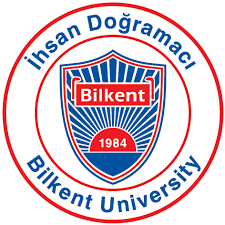

Education
 |
Ph. D., Electrical Engineering, Stanford University, 2018-2023 |
|  |
M. S., Electrical and Electronics Engineering, Bilkent University, 2018 B. S., Electrical and Electronics Engineering, Bilkent University, 2016 |